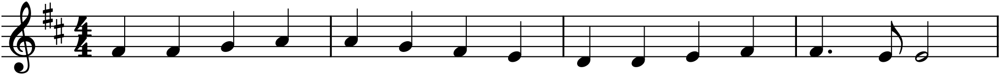
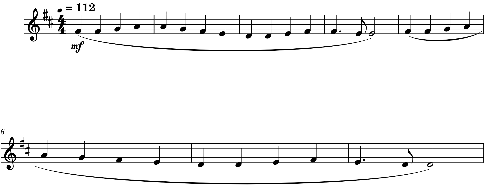

You have spent six chapters learning to read notation. This project is where you first produce it — where the symbols stop being things you decode and become things you make. The task is deliberately not composition; you will invent nothing here. Instead you will take a melody that already exists, in your ear and in some reference score, and render it as clean, correct, readable notation of your own. That is a real skill with real value — it is how you capture a tune you have heard, or prepare a part for someone to play — and it exercises every single thing Part 1 taught, with none of the added burden of deciding what the notes should be. The notes are given; your job is to get them right and make them legible.
Throughout, we will work one example in full — the “Ode to Joy” theme from Beethoven’s Ninth Symphony, a melody almost everyone can already hum — and then set you the same task on a tune of your own choosing.
The brief
Notate a short melody (8–16 bars) from a recording and a reference score, and produce a clean engraving of it in MuseScore: correct pitches and rhythms, the right clef, key, and meter, and enough expression that a stranger could pick it up and play it. Save it as a MuseScore file and export a PDF. This is the first piece of your portfolio.
P1.1Choosing your melody
The worked example is “Ode to Joy,” but for your piece, pick something that fits inside the skills you have. A good first melody to notate is:
- a single line — one melody, no chords or accompaniment yet;
- short — eight to sixteen bars, one or two phrases;
- mostly stepwise, without wild leaps or a huge range;
- in one clear key and meter that do not change partway through;
- and, above all, something you can find a recording of, because your ear is the final authority on whether you got it right.
Nursery tunes and folk songs are ideal: “Twinkle, Twinkle,” “Amazing Grace,” “Frère Jacques,” a national anthem’s opening, a Christmas carol. If you read a little already, a hymn-tune melody or the top line of a simple piano piece works too. Avoid anything with syncopation, triplets, or fast runs for now — those come later.
P1.2Four decisions before the first note
Before entering a single pitch, a notated melody needs four things established, and each draws on a different Part 1 chapter. Decide them by listening to the recording and checking the reference score.
- Clef (Chapter 5). For a melody in the range of a voice or the right hand, the treble clef is almost always right. “Ode to Joy” lives comfortably around and just below the middle of the treble staff.
- Key (Chapter 8). Find the home note — the pitch the tune keeps returning to and ends on — and the scale it draws from. “Ode to Joy” is in D major, two sharps. Setting that key signature now means every F and C you type will be sharp automatically (Chapter 8’s whole point), so the notation stays clean.
- Meter (Chapter 6). Tap along and feel the grouping. “Ode to Joy” is a steady 4/4 — four beats to the bar, no lilt.
- Tempo (Chapter 10). Judge the speed from the recording. A moderate walking pace, about ♩ = 112, suits it.
In MuseScore, make these choices in the New Score wizard (Chapter 1): pick the instrument (any treble instrument, or “Treble Clef” itself), the key of D major, the 4/4 time signature, and a tempo. Start the score with the four decisions already baked in, and entering the notes becomes almost mechanical.
P1.3Entering the notes
Now the core loop from Chapter 2: choose a duration, then type the letters. Work one phrase at a time, checking each against the recording as you go. For the first phrase of “Ode to Joy,” the rhythm is steady quarter notes until the very end of the fourth bar, so press 5 for a quarter and type the pitches — and because the key signature is doing the accidental work, you type plain letter names even for the sharps:

The one rhythmic subtlety is that closing bar in Figure P1.1: a dotted quarter, an eighth, and a half note. Set it with the duration keys — 5 then . for the dotted quarter, 4 for the eighth, 6 for the half — and type the pitches. Then enter the second phrase the same way; it repeats the first almost exactly, ending on D instead of E. When the pitches or rhythm fight you, slow the recording down (Chapter 3’s Speed slider) and check note by note.
P1.4From correct to musical
Correct notes are not yet a finished score. A performer needs to know how the melody should feel, and that is Chapter 10’s expression, added on top. Three touches turn the bare notes into something playable:
- a tempo mark at the start (♩ = 112), so the speed is not left to guesswork;
- a dynamic — a plain mf is honest for a hymn-like tune — placed under the first note;
- and a slur over each four-bar phrase, showing where each musical breath begins and ends.

That is the whole arc of the project in one comparison: Figure P1.1 is correct, Figure P1.2 is finished. The difference is entirely the expression layer, and it is the difference between a data file and a piece of music someone would want to play.
P1.5Proofread, save, export
Before you call it done, check it against the recording one more time — play your score back (Space) and, better still, play the recording and your MuseScore version back to back. Errors that are invisible on the page are obvious to the ear: a wrong pitch, a rhythm that does not line up, a missed sharp. Fix what you hear.
Then treat the file the way Chapter 4 taught. Save the MuseScore project (.mscz) — this is the master you keep. Export a PDF — this is the readable copy you could hand to a player. Give the piece its own folder, name it clearly, and you have your first portfolio artifact: a melody you heard, captured accurately, and engraved cleanly enough to share.
Let your ear lead
The single most important habit this project builds is checking notation against sound. The score is only correct if it plays back like the recording. Whenever you are unsure whether you have the right note or rhythm, do not squint at the page — play it, listen, and compare. Your ear already knows the tune; the project is teaching your eyes and hands to catch up.
P1.6Going further
If the first melody went smoothly, notate a second, slightly harder one — something with a flat key, or a 3/4 meter, or a phrase that uses a leading-tone accidental from Chapter 7. Each new tune stretches a different corner of Part 1. And keep these files: notating is the foundation everything else is built on, and in Part 2 you will take a melody exactly like this one and begin giving it harmony.
Done when…
- The melody is entered with correct pitches and rhythms, verified by ear against the recording.
- The clef, key signature, and time signature are set and correct.
- There is a tempo mark, at least one dynamic, and phrasing (slurs) marking the musical lines.
- The file is saved as
.msczand a PDF is exported. - A stranger could read your score and play the tune back — recognizably.